Students
This page highlights the students I have (had) the privilege to supervise at the undergraduate, master’s, and doctoral levels. Their dedication, curiosity, and contributions are essential to the research we pursue together. Without their active participation, the work presented here would not be possible, and I am deeply grateful for the fundamental role they play in advancing our collective scientific endeavors.
Current Supervisions
MSc 8
Valesca Moura de Sousa
IC/UFFWesley Santos Ferreira
IC/UFFPaula do Nascimento Woyames
IC/UFFItalo Leite Ferreira Portinho
IC/UFF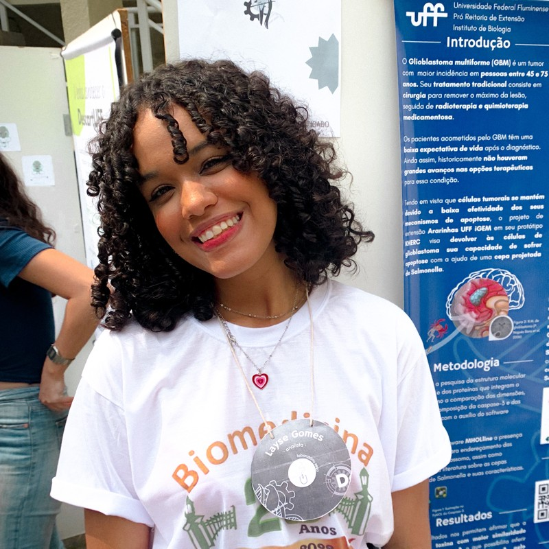
Layse Gomes Castro
IC/UFF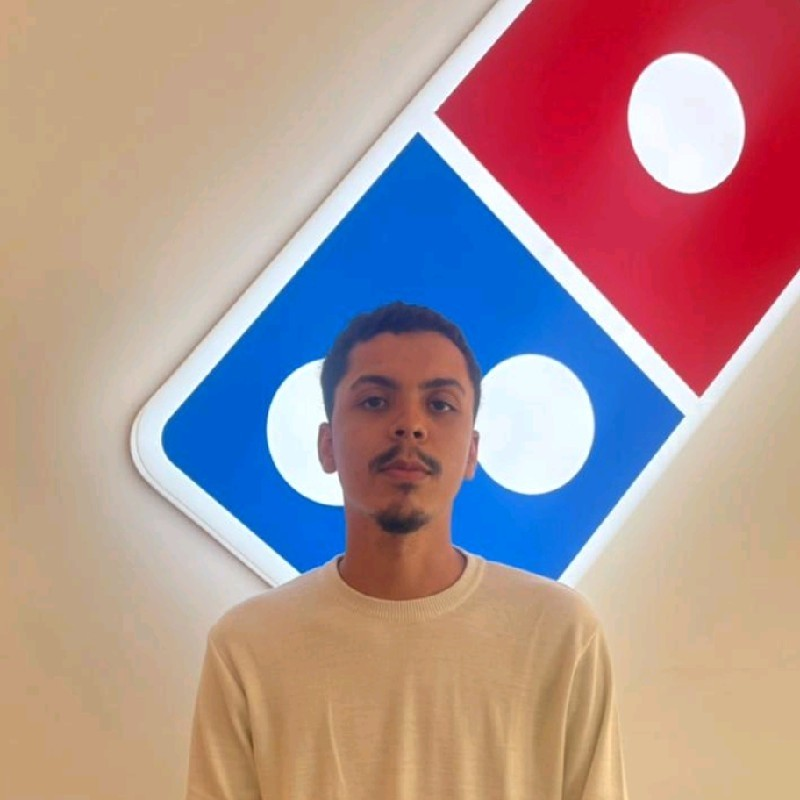
Matheus Nascimento
IC/UFFPhD 10
Douglas Brum
IC/UFFDaniel Pinheiro da Silva Junior
IC/UFFLuis Carlos Ramos Alvarenga
IC/UFF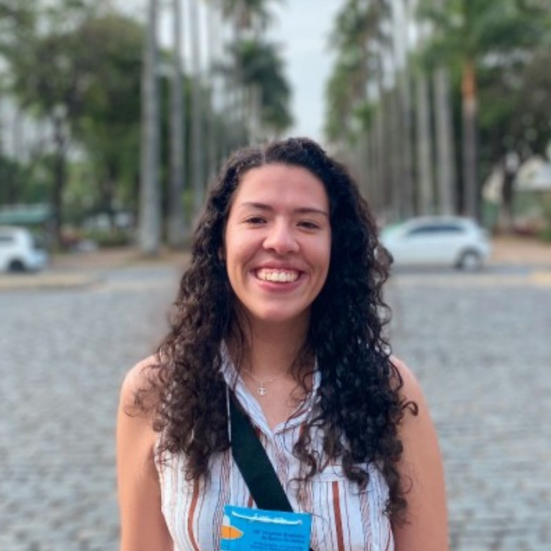
Camila de Oliveira Lopes
IC/UFFGustavo Alexandre Sousa Santos
IC/UFF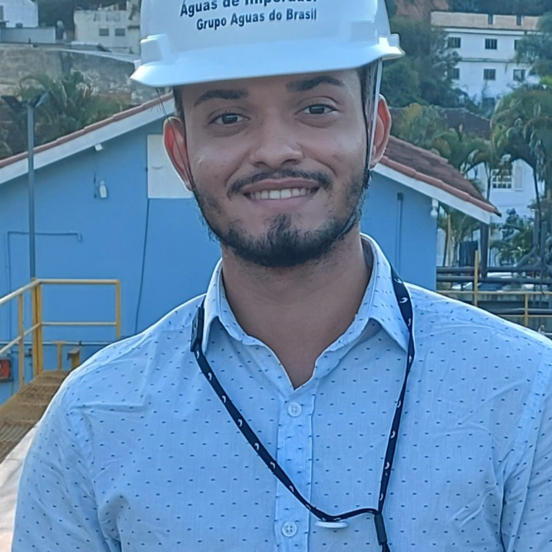
Tobias Ribeiro Barreto
IC/UFFMaria Luiza Furtuozo Falci
IC/UFFAnnie Vianna Amorim
IC/UFFLyncoln Sousa de Oliveira
IC/UFFPost-Docs 1
Luiz Gustavo Dias
Federal Institute of Education, Science and Technology GoianoIC/UFFUndergrad 14
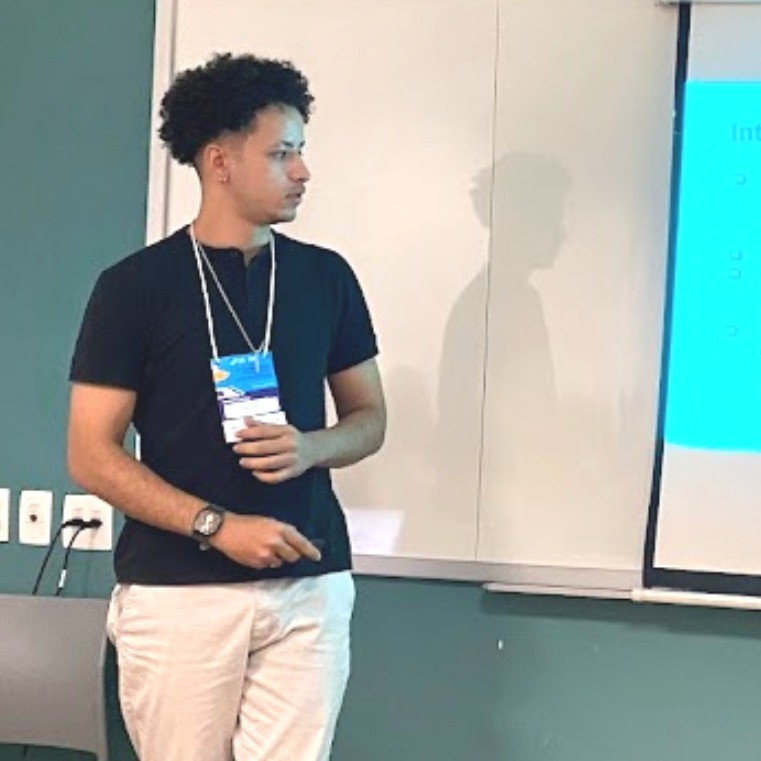
João Vítor Mendonça de Moraes
IC/UFF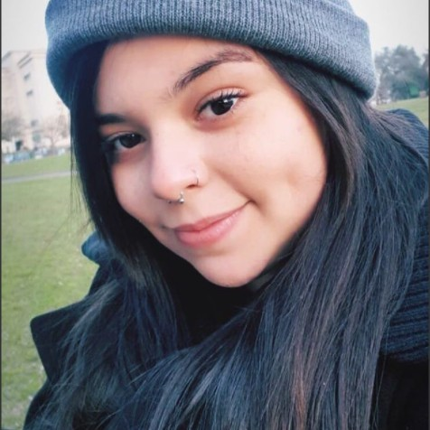
Daniele Pimenta
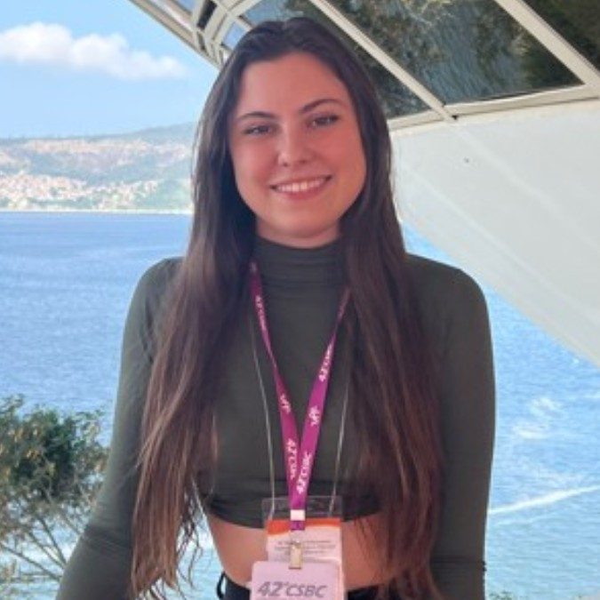
Juliana Moura
Lylian Pacheco
Alonso Brêda Bassin
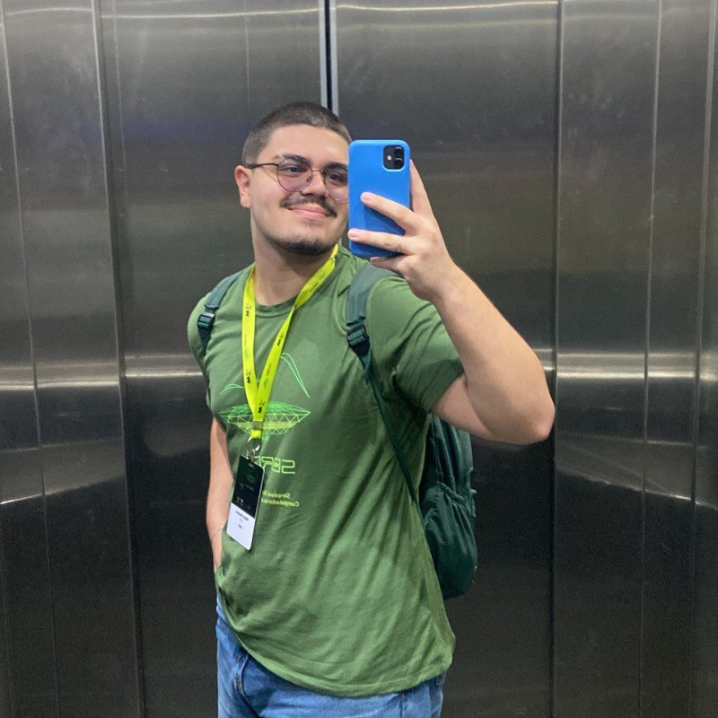
Miguel Jehle
Lucca Possas
Elena Costa Blanco
Josué Santos
Mathews Vaz Reis
Rodrigo Teixeira
Vinícius Barreto
João Victor Mainoth Pereira
Daniel Henrique Vieira Fontoura
Alumni
PhD 11
Marcello Willians Messina Ribeiro
IBGE 2026Uma Abordagem para Escalonamento de Workflows Científicos em Ambientes de Nuvem Híbridos VM-ServerlessIC/UFFDébora Barbosa Pina
Postdoctoral Researcher at UFRJ 2025Provenance Data as a First-Class Citizen for Deep Learning Workflow AnalysesCOPPE/UFRJClaudio Vasconcelos Ribeiro
Electrical Engineer at EMGEPRON 2024A Collaborative Analysis of Anomalous Trajectories of Vessels Based on Clustering AlgorithmsIC/UFFLuiz Gustavo Dias
Federal Institute of Education, Science and Technology Goiano 2024MAESTRO: Uma Abordagem para Gerência de Experimentos Científicos Apoiada por Ontologias e Dados de ProveniênciaIC/UFFRodrigo Alves Prado da Silva
Software Engineer and Solution Architect at Qintess 2024CYCLOPS: Uma Abordagem para Escalonamento de Workflows em Nuvens de Computadores com Restrições de ConfidencialidadeIC/UFFLiliane Neves de Oliveira Kunstmann
Postdoctoral Researcher at IMPA 2024Apoio à Implantação de Workflows ConteinerizadosCOPPE/UFRJWellington Moreira de Oliveira
Professor at CEFET/MG 2018Integrated Analysis of Heterogeneous Provenance GraphsIC/UFFVítor Silva Sousa
AI/ML Speech Data Engineer - Siri Understanding at Apple Inc. USA 🇺🇸 2018Análise de Dados Científicos Sobre Múltiplas Fontes de Dados ao Longo da Execução de Simulações ComputacionaisCOPPE/UFRJ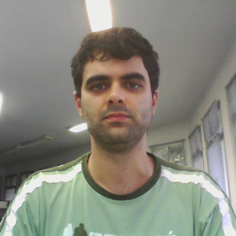
Douglas Ericson Marcelino de Oliveira
Researcher at National Laboratory of Scientific Computing 2017Otimização da Execução de Workflows Intensivos de Dados em Frameworks MapReduceIC/UFF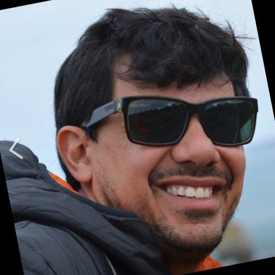
Flavio da Silva Costa
Professor at Colégio Pedro II 2016Uma Abordagem Distribuída e Adaptativa para a Gerência dos Dados de Proveniência de Experimentos Científicos Executados em Nuvens ComputacionaisCOPPE/UFRJAry Henrique Morais de Oliveira
Professor at Federal University of Tocantins 2015Reprodução de Experimentos Computacionais na Infraestrutura de Computação em NuvemCOPPE/UFRJMSc 43
Thiago da Costa Jordão
Brazilian Navy2026ARANI: Uma Abordagem Baseada em Linha de Experimento para Preservação de Privacidade e Auditoria em Data LakesIC/UFF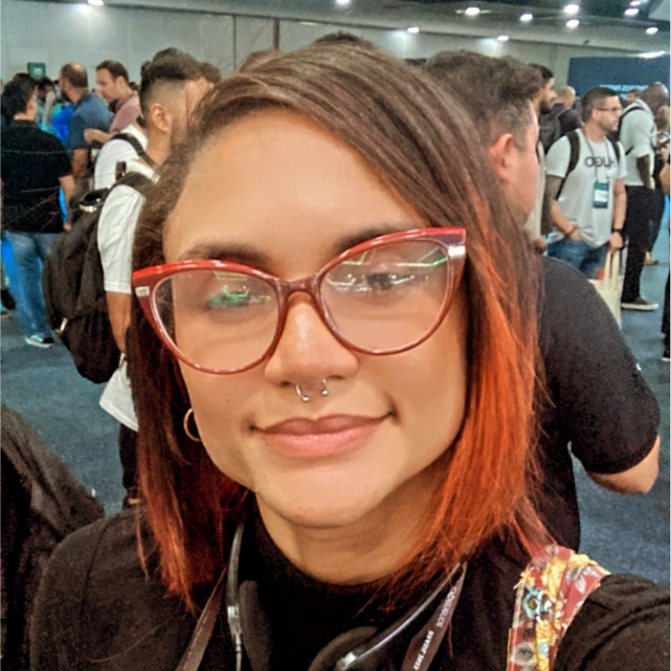
Janaina Borges de Sousa
Brazilian Navy2026Observabilidade Orientada por Dados de Proveniência para Workflows de Aprendizado FederadoIC/UFFAndré Igor Pereira
Caixa Econômica Federal2026 AranduFlow: Rumo ao uso de metadados de desempenho e domínio para prever tempo de execução de workflows em ambientes de HPCCEFET/RJNaira Alice Andrade Arruda
Federal Institute of Education, Science and Technology of Santa Catarina 2025Uso de Dados de Proveniência para Análise do Ensino de Programação Baseada em BlocosIC/UFFYgor Carlos Ferreira Rolim
Data Engineer at GFT Group 2025Derrubando Silos na Pesquisa Científica: Conectando Dados, Código e Escrita por meio da Abordagem TriptychIC/UFFJessica Louise Monçôres de Almeida
Brazilian Navy 2025Governança de Dados em Sistemas-de-Sistemas por meio de Dados de ProveniênciaIC/UFFRaiza Correia de Albuquerque
Data Engineer at Accenture 2025Uma Abordagem para Adequação de Pipelines de Extração, Transformação e Carga à Lei Geral de Proteção de DadosIC/UFF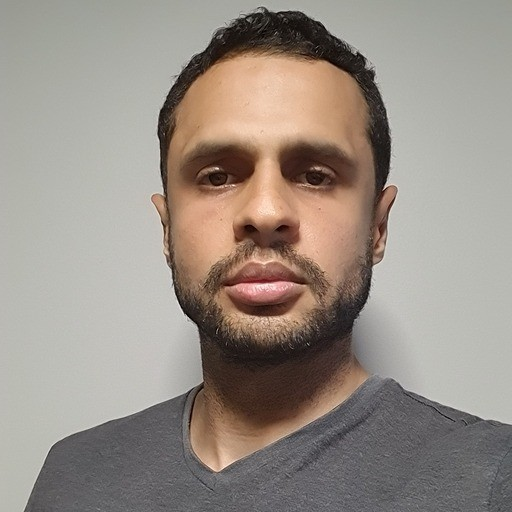
Raslan Oliveira Ribeiro
Data Engineer at iFood 2024APOENA: uma Abordagem de Dimensionamento de Ambiente de Nuvem para Execução de Cargas de trabalho SQL-like por meio de Aprendizado de Máquina e Dados de ProveniênciaIC/UFFLuis Carlos Ramos Alvarenga
IT Consultant at Light - PhD Candidate at UFF 2024Dimensionamento de Recursos para Execução de Workflows Científicos em Ambientes de Computação de Alto DesempenhoCEFET/RJRaffael Muralha Paranhos
Software Engineer at BTG Pactual 2024A Provenance-Based Approach for Land Use Analysis in CitiesIC/UFFAmanda Flor
Product Owner at Siplan 2024UTK-PROV: Analisando a Construção de Visualizações Web Urbanas Baseadas em Gramática Através de ProveniênciaIC/UFFCamila de Oliveira Lopes
Data Scientist at CAF - PhD Candidate at UFF 2024Captura e Uso de Dados de Proveniência em Aplicações de Aprendizado FederadoIC/UFFFabio Victorino da Cruz
Full Stack developer at SEPLAG Niterói 2024Monitoramento em Tempo Real e Análise Histórica das Chuvas e seus Impactos em Áreas UrbanasIC/UFF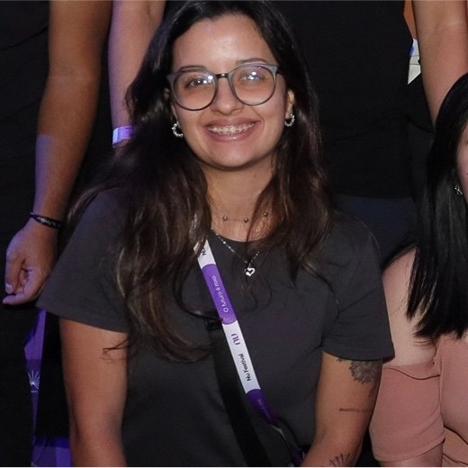
Bruna de Mello Almeida
Senior Analytics Engineer at Nubank 2024Otimização de Parâmetros em Aplicações de Big Data Baseadas em Múltiplos FrameworksIC/UFFMatheus Antunes Vieira
2024Enriquecimento do Processo de ETL em Data Warehouses por meio de Dados de ProveniênciaIC/UFFElbe Alves Miranda
Digital and Analytical Solutions Manager at Petrobras 2023O SPARQL Pode Falar em Português? Respondendo a Perguntas em Linguagem Natural Direcionadas a Grafos de ConhecimentoIC/UFF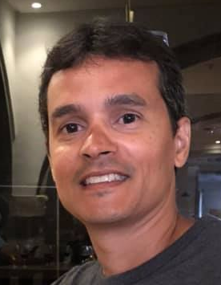
Luis Felipe Xavier Augusto de Oliveira
2023Mapeamento de Rotas para Resposta de Emergência a Eventos Climáticos: Uma Abordagem Orientada por DadosIC/UFFAnnie Vianna Amorim
PhD Candidate at UFF 2023Uma Metodologia para a Avaliação Experimental de Modelagem de Tópicos em Textos CurtosIC/UFFWagner Guimarães Santos
Rio de Janeiro Police Department 2023PANDORA: Uma Plataforma Colaborativa para Transcrição Semiautomática de Boletins de Ocorrência ManuscritosIC/UFFGustavo Decarlo Ferreira Secchim
Data Engineer at Thoughtworks 2023Otimização de dataflows em frameworks de big data por meio do reúso de dadosLNCCLorenna Christ'na Araújo Nascimento
AI & Automation Consultant at Customer Science Australia 🇦🇺 2022Análise de Abordagens de Gerência de Dados para Apoiar a Visualização Interativa de Dados PluviométricosIC/UFFMaicon Ribeiro Banni
Data & Analytics Engineering at Falconi 2022HURRICANE: Um Serviço para Integração de Dados de Aplicações de Cidades InteligentesIC/UFFLucas Bertelli Martins
Agile Master (SAFe) and Project Manager at ALGO360 P&D Petrobras 2021DIMPLY: Uma Abordagem para Privacidade Diferencial em Sistemas PolystoreIC/UFFDaniel Leonardo Jasbick
Senior Data Engineer at Accruent 2021Buscas por Similaridade Diversificada com o Apoio de Índices MétricosIC/UFFLucas de Souza Tito
Business Strategy Partner, Agile Expert at Itaú Unibanco 2020Gerência de Data Lakes Científicos com o ξ-DL: um estudo de caso da COVID-19IC/UFFYan Mendes Ferreira
Head of Product at Cayena 2020Polyflow: a Polystore-compliant mechanism to provide interoperability to heterogeneous provenance graphsUFJFDébora Barbosa Pina
Postdoctoral Researcher at UFRJ 2020Captura de Dados de Proveniência para Apoiar a Análise de Hiperparâmetros em Redes de Aprendizado ProfundoCOPPE/UFRJLiliane Neves de Oliveira Kunstmann
Postdoctoral Researcher at IMPA 2020PROVDEPLOY: Apoio à Coleta de Dados de Proveniência em Scripts de Execução de Códigos CientíficosCOPPE/UFRJ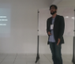
Leonardo Sousa Lima Ramos
2019PhenoManager: Uma Abordagem para Gerência de Hipóteses CientíficasIC/UFFFilipe Tadeu Santiago da Silva
R&D Data Scientist at ExACTa, PUC-Rio 2019Uma Abordagem para a Execução de Workflows Científicos Intensivos em Ambientes de Computação em Nuvem HíbridosIC/UFFCarlos Gracioli Neto
Federal Institute of Education, Science and Technology of Mato Grosso 2019Uma Abordagem baseada em Definição de Escopo e Elementos Esperados para Apoiar Inspeção de Modelos de SoftwareIC/UFF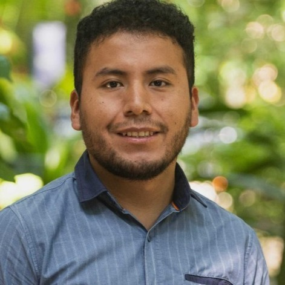
Kid Yonatan Valeriano Valdez
in memoriam 2019POStURE: A Framework for Unsupervised Semantic Analysis of Political SpeechesIC/UFFDaniel Pinheiro da Silva Junior
IT Analyst at UFF - PhD Candidate at UFF 2019Recomendação de Parâmetros em Workflows Científicos por meio de Aprendizado de PreferênciasIC/UFFMarcello Willians Messina Ribeiro
IBGE 2018Processamento Paralelo de Consultas OLAP em Nuvens de Computadores com C-ParGRESIC/UFFHugo Arraes Henley
Senior Engineering Manager at Datadog France 🇫🇷 2018Prelude: uma Arquitetura para Análise de Evasão no Ensino Superior por meio de Aprendizado de Máquina RelacionalIC/UFFAndré Luís da Costa Nascimento
Tech Lead & Software Architect at Darwin Seguros 2018Uma Estratégia de Escalonamento baseada em Aprendizado por Reforço para Workflows Científicos em Nuvens de ComputadoresIC/UFFAugusto Consulmagnos Romeiro
Tech Lead na Impulso 2017SciAgile: Uma Abordagem Ágil em Processos de Experimentação CientíficaIC/UFFLeonardo Araújo de Jesus
Senior Software Engineer at Nubank 2017Tolerância a Falhas Em Workflows Científicos Executados em Nuvens ComputacionaisIC/UFFIgor Barreto Rodrigues
2016Uma Abordagem Hierárquica para Escalonamento de Atividades de Workflows Científicos Executados em Nuvens de ComputadoresIC/UFF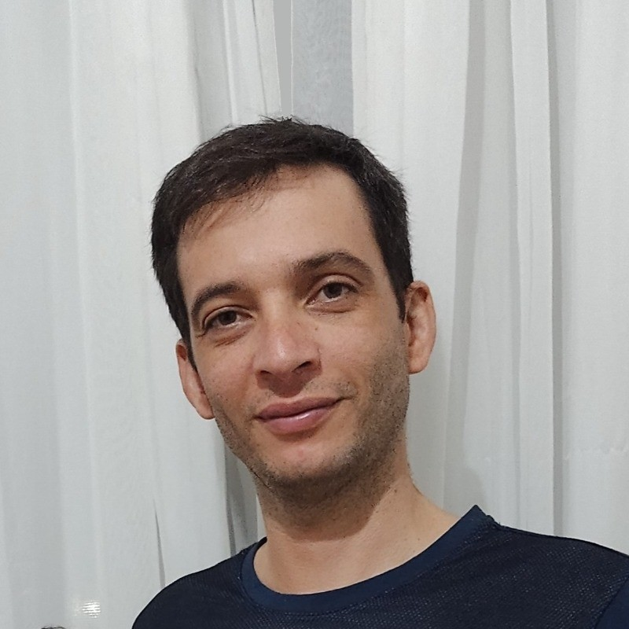
Lidson Barbosa Jacob
IT Analyst at UNIVIÇOSA 2015Spielzyklus: Identificando Padrões de Ciclos em Dados de Proveniência Extraídos de Forma não IntrusivaIC/UFF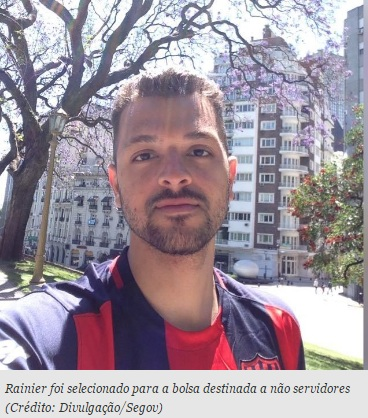
Vítor Silva Sousa
AI/ML Speech Data Engineer - Siri Understanding at Apple Inc. USA 🇺🇸 2014Uma Estratégia de Execução Paralela Adaptável de Workflows CientíficosCOPPE/UFRJUndergrad 113
Raphael Reis Garcia
DevOps Analyst at Banco BOCOM BBM 2025IC/UFFLucas Aguiar Tostes
Data Engineer at Accenture 2025IC/UFFLucas Natan França Costa
2025IC/UFFPedro Costa Xavier
Data Analyst at SENAC 2025IC/UFFGabriel Silva Marinho
Software Developer at CI&T 2025IC/UFF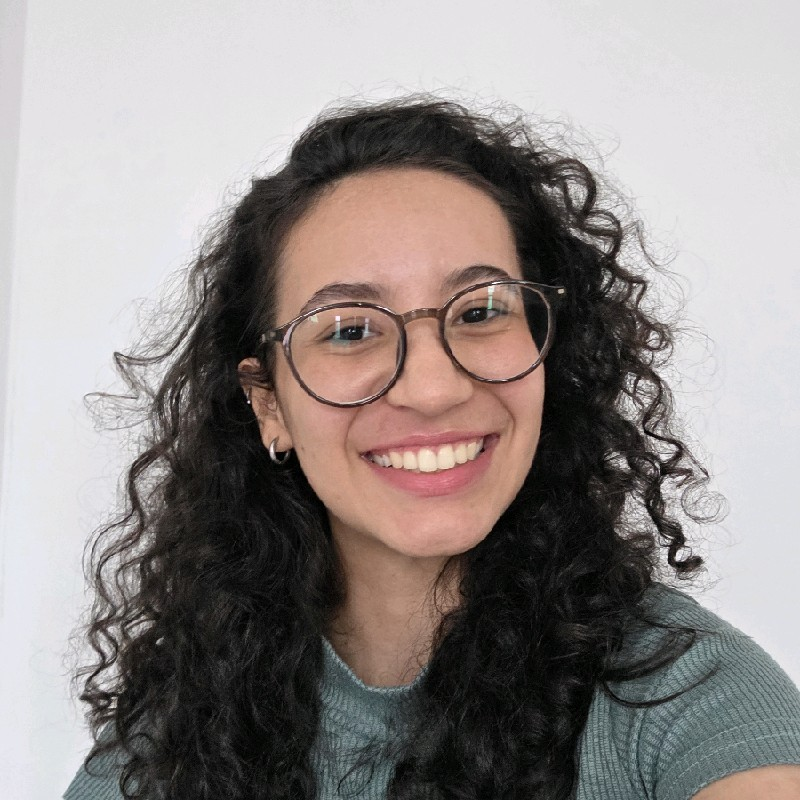
Laryssa Machado Rabelo de Paiva
Data Engineer at PrimeUp 2025IC/UFF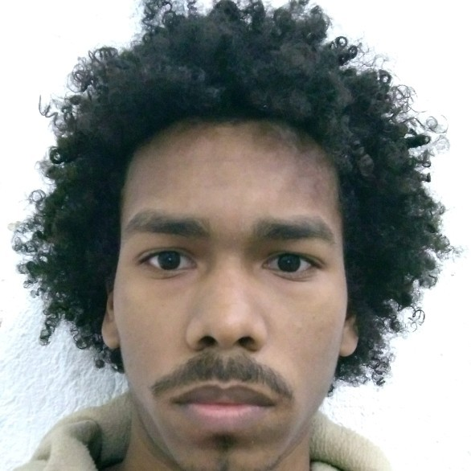
Willian de Jesus Oliveira
Data Engineer at MODEC 2025IC/UFFLeonardo Menezes
Developer at Compass.uol 2025IC/UFFUgo Gemesio
Software Developer at Sulwork 2025IC/UFFBruno Gabriel Montate da Silva
Data Analyst at Gerar Serviços 2025IC/UFFMatheus Lima
Salesforce Developer at GLOBAL HITSS 2024IC/UFFTiago Matos
Public Health Mannager at Hospital Alemão Oswaldo Cruz 2024IC/UFF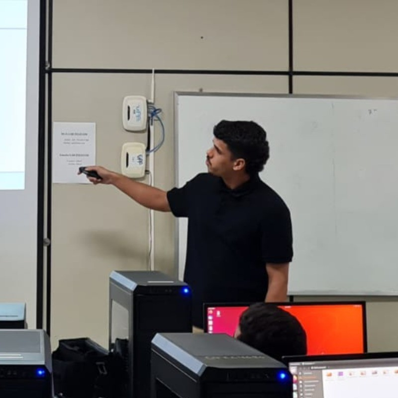
Bruno Cotelo
Backend Developer at Archdecorpoints 2024IC/UFF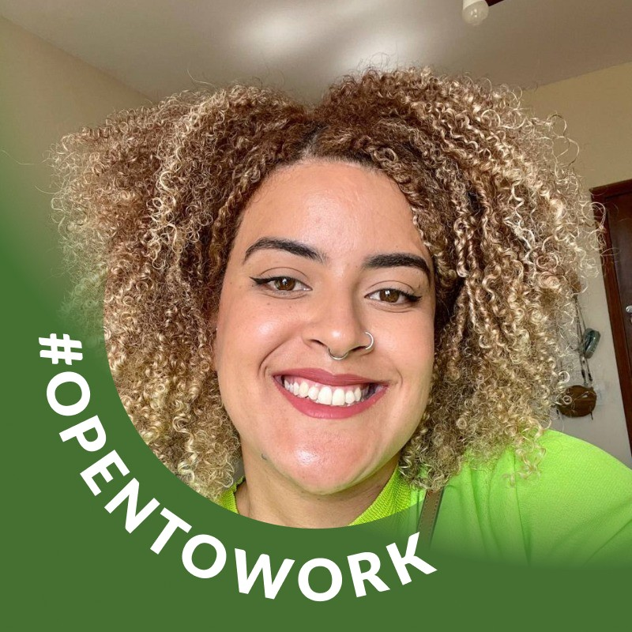
Mariana Coutinho
Software Engineering Manager at Americanas 2024IC/UFFFelipe Gomes
Software Engineer at Calindra Tech 2024IC/UFFWesley Ferreira
Tech Lead at NerdMonster 2024Winne Rodrigues
System Developer at UFES 2024Isaac Ferreira
Software Engineer at Wellhub 2024Camila Ferrari
Software Developer at Bemobi 2023Thomaz Lisbôa
Infrastructure Analyst at SPX Capital 2023Lorenzo Aceti
Full Stack Developer at TRACTIAN 2023Guilherme Fernandes
TI Analyst at Banco do Brasil 2023Janaina Borges
Data Analyst, Data Scientist at Stone 2023Philippe Simões
Software Engineer at KAMiner 2023Paula Fernandes
Software Engineer at Capgemini 2023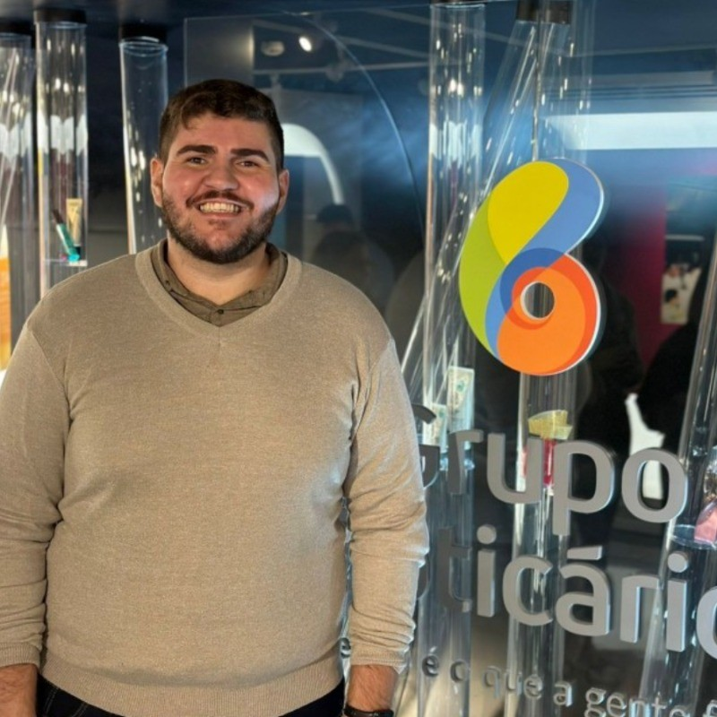
Rodrigo Cavote
Data Analyst at Grupo Boticário 2023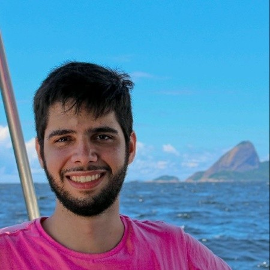
Bruno Belizário
DevOps Engineer at ecoPortal 2022Ana Luisa Esposito
Java Developer at Sensedia 2022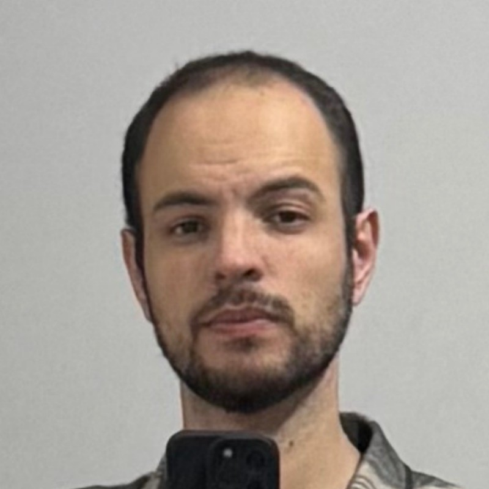
Lucas Rogério Silva
Senior Software Engineer at PrimeUp 2022Rodolfo Chagas
Tech Leader at Banco BOCOM BBM 2022Geison Leonino De Souza Ferreira
2022Maycon Prata
Fullstack Developer at Digisystem 2022Caio Wey de Barros
RPA Developer at Smarthis 2022Igor Lisboa
Tech Leader at Prognum 2022Yago Azedias
Software Engineer at Nubank 2022Matheus Antunes Vieira
2022Nicolas Nascimento Atmatzides
AWS Consultant at Marlo 2022Victor Faria de Souza
2022João Loureiro
Data Engineer and Data Platform Engineer at Caylent 2022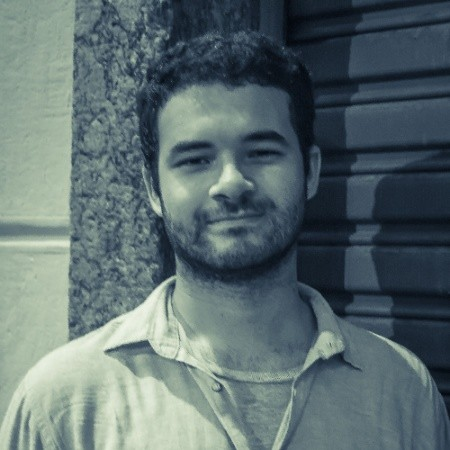
Lucas Knust
Data Integration Specialist at CSP Tecnologia 2021Ramon Santos
BI Analyst at iFood 2021Amanda Tamires Inacio
2022Sophia Duboc
Software Engineer at Loggi 2021Anna Areias
Software Engineer at iFood 2021Lenora Beaurepaire Schwaitzer
Professor at UFES 2021Juliana Mesquita
Junior Developer at TODOS 2021Mateus Kono
Senior Software Engineer at Stone 2021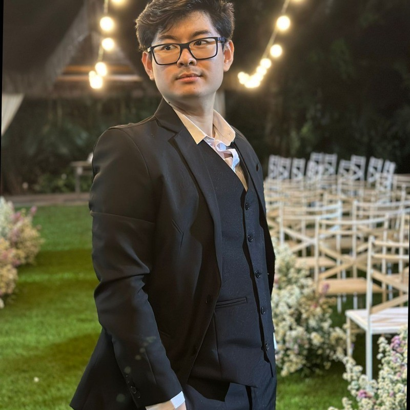
Leandro Shibahara
System Analyst at Prill Tecnologia 2021Renato De Vico
Salesforce Tech Lead at DVNube 2021Daniela Siqueira
2021Ygor Carlos Ferreira Rolim
Data Engineer at GFT Group 2020Isabela Alves de Oliveira
2020Diego Duarte
System Analyst at Mestra Informátia 2020Thiago Prado
Software Engineer at Evertec 2020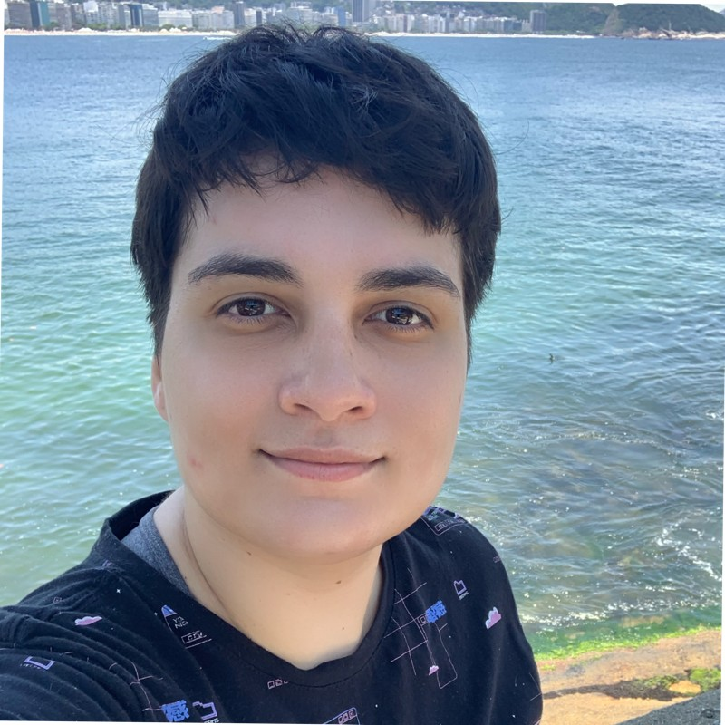
Suzana Barboza Carvalho
Data Manager at Willbank 2019Felipe Assad
Full Stack Developer at DNA Specialty 2019Jorge Felipe Campos Chagas
Full Stack Developer at Trybe 2019Bruno Hilario
Programmer at Superlógica 2019Victor Olimpio
Data Scientist at Compass.uol 2018Ricardo Jose Conceição Junior
2018Caio de Souza e Silva
2018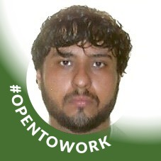
Rafael Ferreira Ramalho
IT Analyst at Rede D'Or 2017Daniel Pinheiro da Silva Junior
IT Analyst at UFF - PhD Candidate at UFF 2017Marcelo D'Almeida
PhD Student at University of Pittsburgh 2017Bernardo Amaral
Software Engineer at Canva Australia 🇦🇺 2017Paulo Mann
Professor at UFRJ 2017Frederico Queiroz
Managing Partner at BHP Australia 🇦🇺 2017Arthur Miranda Guimarães
Senior Frontend Engineer at Blue Coding 2017Lucas Carreiro Pinheiro
2017Lucas Bertelli Martins
Agile Master (SAFe) and Project Manager at ALGO360 P&D Petrobras 2017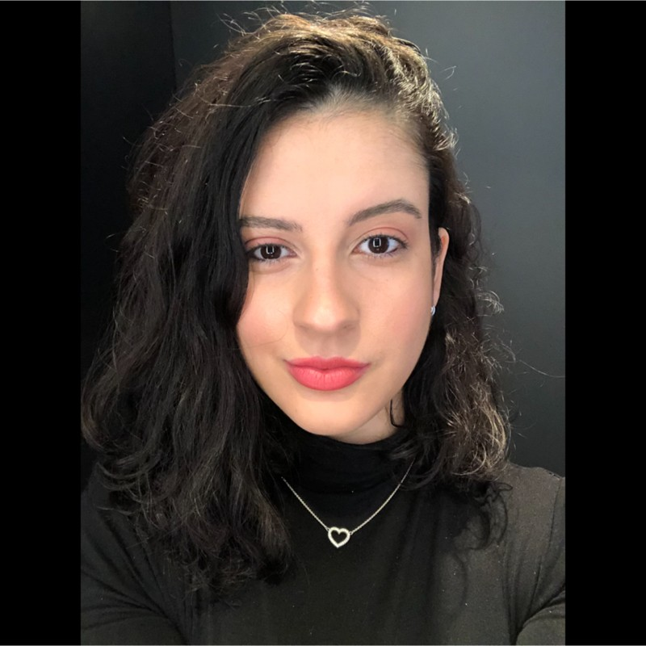
Monique Moledo
Software Engineer at Shopify Financial Services Canada 🇨🇦 2017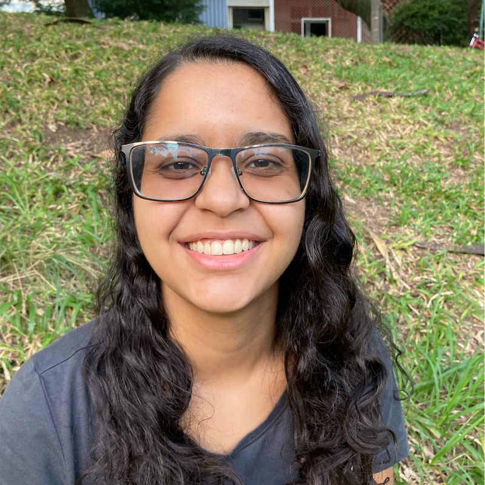
Mariana Teixeira
Tech Lead at Timestamp:its Portugal 🇵🇹 2017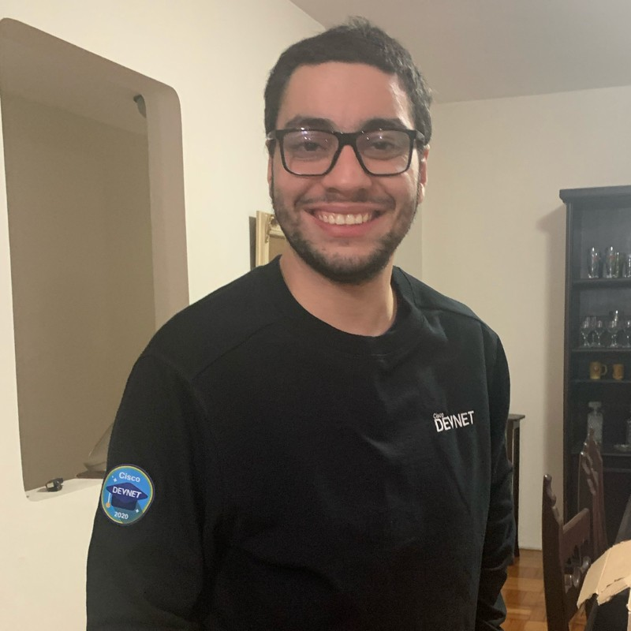
Fabrizio Moura
Software Support Engineer at Cisco Poland 🇵🇱 2017Guilherme de Souza Silva
2017Luciano Nascimento
Data Engineer and Cloud & Big Data Architect at JOW Analytics 2017Rômulo Pereira Soares da Silva
2017Leonardo Sousa Lima Ramos
2016Filipe Tadeu Santiago da Silva
R&D Data Scientist at ExACTa, PUC-Rio 2016Daniel Rossi Marinho
Full-Stack Developer at Goboony Netherlands 🇳🇱 2016Pedro Develly
System Analyst at TopDown Sistemas 2016Felipe Tavares
Senior Systems Analyst at Sinqia 2016Gisele Araujo de Freitas Pereira
Java Developer at Critical Techworks Portugal 🇵🇹 2016Maximiano Pereira
Software Developer at Critical Techworks Portugal 🇵🇹 2016Fabiane Lucas
Data Engineer at NTT Data 2016Felipe Vieira de Lima
Senior Staff Software Engineer at OLX Brasil 2016Jorcyane Lima
Federal Institute of Education, Science and Technology of Paraíba 2016Carlos Maciel
Fullstack Developer at Global HITSS 2015Bruno Conti
Founder of Alssie Australia 🇦🇺 2015Renan Vinagre Camara
Tech lead at Colégio e Curso Start 2015Gisele Alves Carneiro
Engineering Manager at OLX 2015Pedro Silva
2015Lucas Amorim
Software Developer at V360 2014Carlos Filipe M. Teixeira Jr.
Staff Software Engineer at PicPay 2014Guilherme Rangel
2014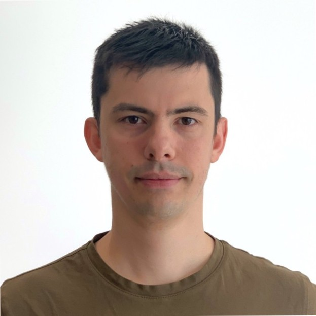
Guilherme Miranda
Senior Software Development Engineering at AWS Canada 🇨🇦 2014João Augusto B. V. de Souza
2014Gustavo Tallarida
Java Developer at MPDFT 2014Paulo Henrique Ouverney Bastos
Senior Cloud, DevSecOps at OpsGuru Canada 🇨🇦 2014Guilherme Gonçalves
Software Developer at Ambev Tech 2014Felipe Horta
ESG & Urban Science Expert at Minnow Spain 🇪🇸 2013Juliano Oliveira
2013Leonardo Almeida
2013Deulysses Dael
2013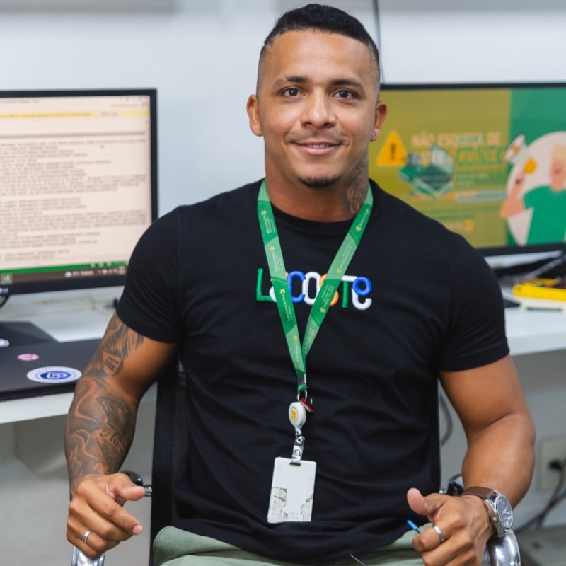
Adeilson Nascimento
IT Supervisor at Grupo Bravante 2013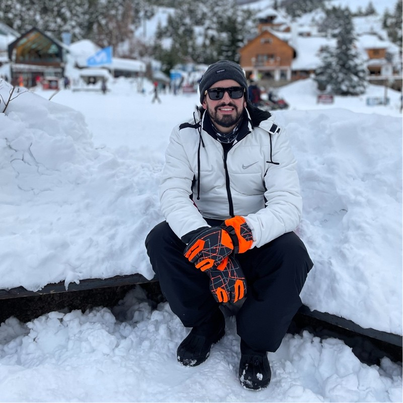